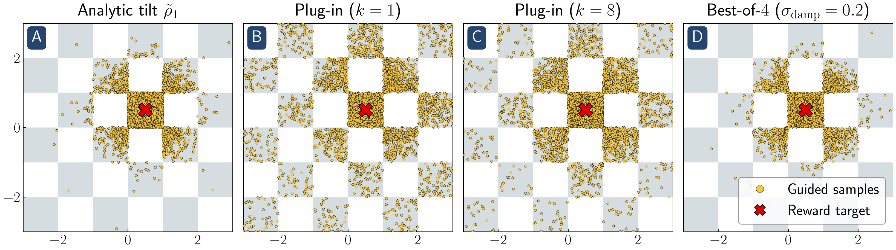
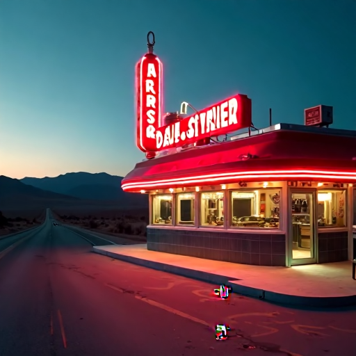
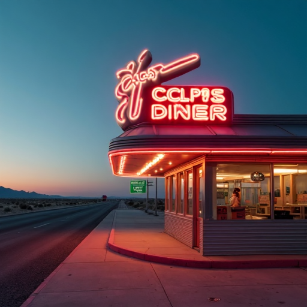
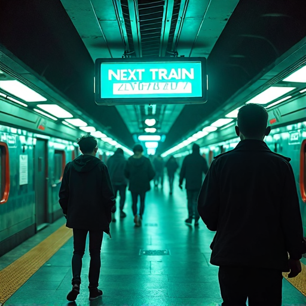
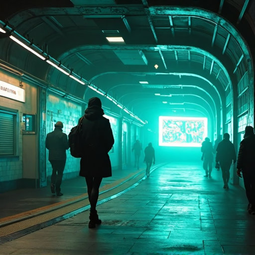

Experiments
We confirm that our insights translate to practice through a variety of experiments (see the paper for details and more results).
Within-mode reward hacking
Masked intensity reward: mean pixel intensity inside a top-right circular mask minus the mean intensity outside.
Blueness reward: mean blue channel minus the mean red and green channels.
ImageReward: a learned human-preference reward taking a prompt and an image as inputs.
Mode selection
Checkerboard: the base model samples uniformly from the checkerboard (gray) and the reward is Gaussian.

Checkerboard statistics. Mean reward and covariance trace for each method. Plug-in guidance cannot select modes, so the mean reward is too low and the covariance trace is too high. Best-of-$2$ already improves reward and comes close to matching the analytic tilt; best-of-$4$ with reward damping increases fidelity to the analytic tilt even further.
| Method | Mean reward | Cov. trace |
|---|---|---|
| Analytic tilt | 0.914 ± 0.003 | 0.457 ± 0.021 |
| Plug-in ($k=1$) | 0.764 ± 0.004 | 1.930 ± 0.048 |
| Plug-in ($k=8$) | 0.804 ± 0.007 | 1.397 ± 0.068 |
| Best-of-$2$ | 0.914 ± 0.003 | 0.520 ± 0.026 |
| Best-of-$4$ | 0.978 ± 0.002 | 0.107 ± 0.010 |
| Best-of-$4$, $\sigma_{\mathrm{damp}}=0.2$ | 0.920 ± 0.004 | 0.429 ± 0.022 |
FLUX.1 (VLM reward): the base model is FLUX.1-dev and the reward is $r(x) = \log(p(\mathrm{Yes})) - \log(p(\mathrm{No}))$, where $p(\cdot)$ denotes the next-token probability from the Qwen2.5-VL-3B VLM.
“a roadside American diner in the Nevada desert, shot at twilight, a neon sign on the roof glowing ECLIPSE DINER, in cherry-red and cream tubes, a long empty highway behind it, painterly warm light on chrome surfaces”







“cyberpunk subway platform with a holographic display that says NEXT TRAIN MARS, teal neon, commuters in silhouette”

